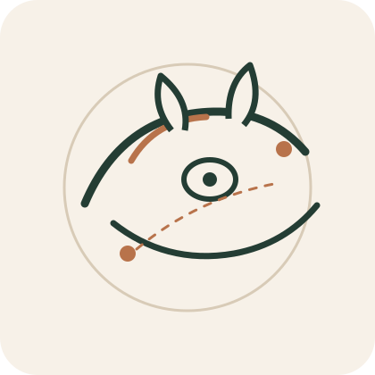
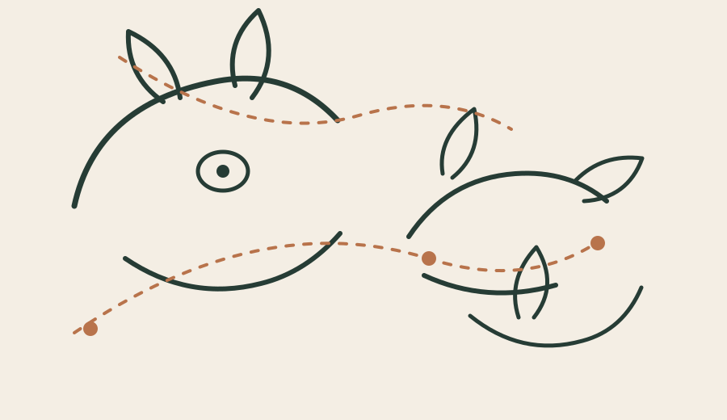
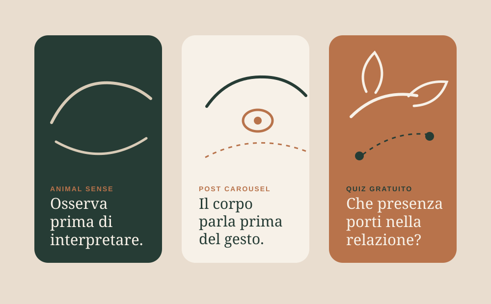

Perché Animal Sense
“Animal” rende immediata la componente animale. “Sense” richiama percezione, osservazione, significato e buon senso: è più sicuro di “Heal” perché non promette guarigione.
Bozza branding · direzione 01
Educazione alla relazione consapevole con gli animali.
Una direzione più animale, meno astratta e più immediatamente leggibile rispetto a The Calm Field: osservazione, presenza, comportamento e relazione quotidiana senza claim terapeutici.

Riposizionamento
“Animal” rende immediata la componente animale. “Sense” richiama percezione, osservazione, significato e buon senso: è più sicuro di “Heal” perché non promette guarigione.
Il brand parla di educazione, consapevolezza e benessere relazionale. Non offre terapia, diagnosi, cura veterinaria, trattamento comportamentale clinico o guarigione.
Italia come fase di validazione, con nome internazionale. La versione “Animal Sense Italia” può essere una community o una pagina, non necessariamente il brand principale.
Sistema visivo
La componente animale entra attraverso linee anatomiche, sguardi, orecchie, posture e distanza relazionale. Niente zampette, cuori o animali cartoon.

Titoli: serif editoriale elegante, tipo Lora, Cormorant Garamond o Playfair Display.
Testi: sans-serif pulita, tipo Inter, Avenir o Source Sans 3.
Logo
Un occhio animale astratto come simbolo di osservazione, percezione e attenzione reciproca.
Priorità: altaUna linea fluida che suggerisce più specie senza rappresentarne una sola: cavallo, cane, gatto.
Priorità: molto altaDue presenze, umano e animale, collegate da una linea aperta: relazione con distanza e confini.
Priorità: altaValutazione rapida
Nome più animale, internazionale, meno astratto e più sicuro di Animal Heal.
“Sense” va spiegato in italiano e verificato su marchi, domini e competitor.
Media: serve un payoff chiaro e una grafica con presenza animale forte.
500-2.500 € per naming check, identità base, landing e primi materiali.
3-5 settimane per una bozza testabile con pubblico reale.
Alto se il brand resta educativo e non scivola verso guarigione o terapia.
Bozze social
Grafiche con animale visibile, ma sofisticato.

Osserva prima di interpretare.
Per insegnare la differenza tra ciò che vediamo, ciò che immaginiamo e ciò che scegliamo di fare.
Il corpo parla prima del gesto.
Per portare attenzione su postura, orientamento, tensione, distanza e micro-segnali.
Che presenza porti nella relazione?
Quiz gratuito per segmentare il pubblico e introdurre lo Starter Kit Animal Sense.